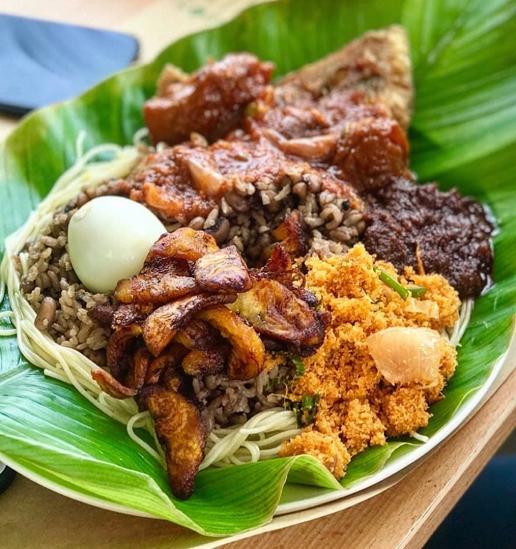

Waakye

Description
Waakye is a Ghanaian dish of cooked rice and beans, commonly eaten for breakfast or lunch.
Only few people have it for supper (cos of the beans it contains)
It is cooked using many of the methods, some without additional spices and herbs.
The rice is cooked with an indigenous leaf (sorghum leaf sheaths) and black eyed peas (indigenous) or kidney beans.
It is commonly prepared in the home but it is mostly sold by roadside vendors.
A typical waakye meal usually consists of the cooked rice, beans, stew, shito
some spaghetti and moist gari,(both of which are sometimes mixed with oil from the stew),
boiled eggs, stewed meat or stewed/fried fish, stewed wele and sometimes vegetable salad.
Ingredients
- Rice
- Black eye beans/kidney beans
- Waakye leaves
- Salt
Steps
- Wash the beans and the waakye leaves
- Put washed beans and waakye leaves into pressure cooker and boil for about 30mins or till beans becomes soft
- Pour beans and waakye leaves mixture into a bigger cooking pot
- Wash your rice and add to the pot containing your beans and waakye leaves mixture
- Add a little more water and allow rice to cook till it is dry.
- You can serve it with stew/gravy, shito, vegetable salad with some meat and eggs. Enjoy